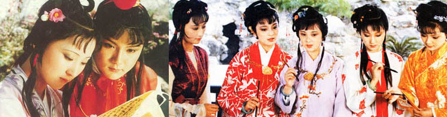
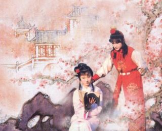
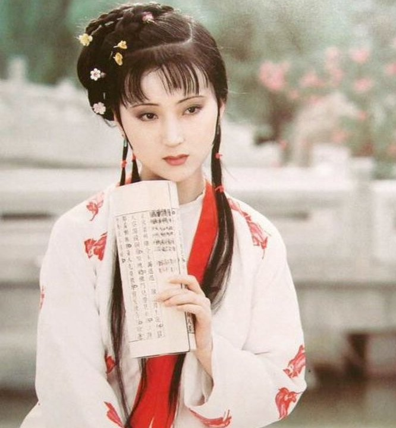
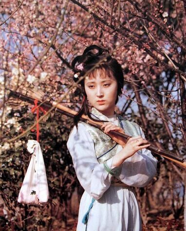
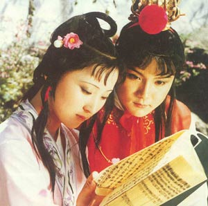
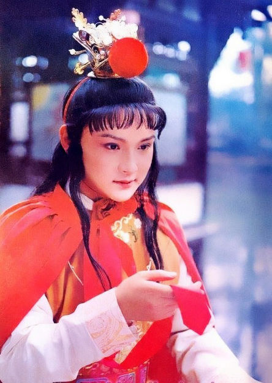
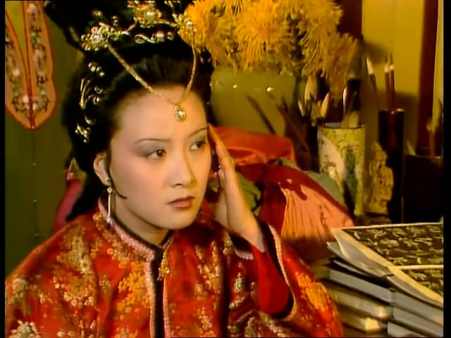

|  |

要说影视系列的《红楼梦》，不得不提的就是87版的电视剧。 1987年版电视连续剧《红楼梦》是根据我国古典文学名著《红楼梦》摄制的一部大型古装连续剧，共36集。曾在中央电视台及各大电视台播出，观众好评如潮，成为经典之作。
|
林黛玉--陈晓旭（饰） 
87年版的《红楼梦》之所以成为经典，林黛玉的扮演者陈晓旭有很大的功劳。有很多人说，陈晓旭就是林黛玉，荧幕上的她与其说是在演戏，更像是她的真实写照。“两弯似蹙非蹙笼烟眉，一双似喜非喜含情目。态生两靥之愁，娇袭一身之病。泪光点点，娇喘微微。娴静似娇花照水，行动如弱柳扶风。心较比干多一窍，病如西子胜三分。”说的是林黛玉，看到的是陈晓旭。

 林黛玉与贾宝玉共读西厢。和宝玉在一起的黛玉比平日的她总能少几分忧伤。
|
贾宝玉--欧阳奋强（饰） 
87版贾宝玉由当时年仅20岁的欧阳奋强饰演，天生一张娃娃脸的他，把贾宝玉孩子气的活泼和任性表现的淋漓尽致。和林黛玉一样，欧阳奋强饰演的贾宝玉深入人心，至今无人超越。 |
王熙凤--邓婕（饰） 
“一双丹凤三角眼，两弯柳叶吊梢眉，身量苗条，体格风骚，粉面含春威不露，丹唇未起笑先闻。”是曹雪芹先生对王熙凤的描写，精明，机关算尽是王熙凤给世人的最深印象。87版中邓婕将凤姐的“辣子”劲演得恰到好处。就连第一次出场“不见其人，先闻其声”的笑声都无人能及。 |
| 87版的《红楼梦》第一次把这部文学巅峰之作搬上荧幕，让老百姓们开始知道《红楼梦》，把《红楼梦》变成了一个妇孺皆知的名字，而且无论是从演员的演技还是场景的设计，87版《红楼梦》都值得人称赞。也正是如此，这部《红楼梦》也成了至今无法被超越的荧幕《红楼梦》。 |